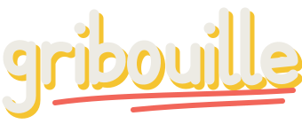

Gribouille est un jeu où l'on dessine mal et où l'on rit beaucoup. Son identité tient en une idée : tout se dessine au trait. Une ardoise sombre, des feuilles de papier posées dessus, des marqueurs de couleur et une écriture à la main, lisible avant tout.
Un mot-symbole dessiné à la main, sans police : chaque lettre est un seul trait de marqueur, doublé d'une ombre jaune décalée et souligné de deux coups de corail. Il s'écrit lui-même à l'ouverture du jeu.
Garder une marge libre au moins égale à la hauteur du « o » autour du logo. Taille minimale : 96 px de large.
Ne pas le recolorer, l'étirer, lui ajouter un contour ni le poser sur une photo chargée.
Deux supports, l'ardoise et le papier, et cinq marqueurs. Le jaune est la seule couleur d'action principale : un seul bouton jaune par écran.
Une seule famille : Shantell Sans, une écriture manuscrite pensée pour être lue en interface. Trois graisses (Regular 400, Semibold 600, Extrabold 800), une échelle de rapport 1,25. Hébergée avec le jeu, aucune requête externe.
Un jeu d'icônes maison, au même trait que le logo : feutre de 2,2 px aux bouts ronds, sur une grille de 24. Jamais d'emoji dans l'interface.
Chaque joueur dessine son perso en sweat à capuche : 8 peaux, 12 sweats, 10 regards, 10 bouches, 10 accessoires, soit 96 000 combinaisons. Trait d'encre de 3,5 px, aplats sans dégradé.
Jaune : l'action qui fait avancer (créer, lancer, valider). Encre : l'alternative directe. Discret : tout le reste.
Tout ce qui apparaît se trace, comme un trait de feutre : de gauche à droite, rapide au départ, qui ralentit à la fin. Les retours de jeu (bonne réponse, podium) rebondissent légèrement. Si le système demande moins d'animations, tout s'affiche directement.
| Jeton | Valeur | Usage |
|---|---|---|
| --t-fast | 120 ms | survol, appui |
| --t-med | 260 ms | apparition d'un message, d'une ligne |
| --t-slow | 520 ms | tracé d'un souligné, arrivée d'une feuille |
| --ease-out | cubic-bezier(.22, 1, .36, 1) | tout ce qui se trace ou glisse |
| --ease-spring | cubic-bezier(.34, 1.56, .64, 1) | récompenses : points, coche, podium |
On parle comme entre potes, au tutoiement, en phrases courtes. Un bouton dit exactement ce qu'il fait. Une erreur explique quoi faire, sans s'excuser.
« Lancer la partie »
« Le code fait 4 lettres. »
« Il faut au moins 2 joueurs. Partage le code ou le lien. »
« Valider »
« Oups, une erreur est survenue » suivi d'un emoji
« Veuillez saisir un identifiant valide »